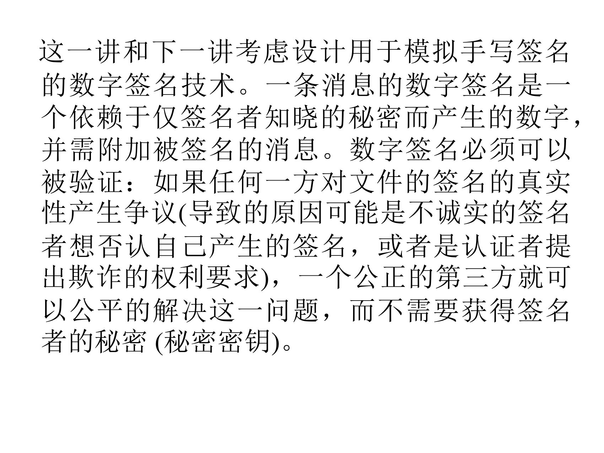

（PPT 第 2–4 页）
这一讲和下一讲考虑设计用于模拟手写签名的数字签名技术。一条消息的数字签名是一个依赖于仅签名者知晓的秘密而产生的数字，并需附加被签名的消息。数字签名必须可以被验证：如果任何一方对文件的签名的真实性产生争议（导致的原因可能是不诚实的签名者想否认自己产生的签名，或者是认证者提出欺诈的权利要求），一个公正的第三方就可以公平的解决这一问题，而不需要获得签名者的秘密（秘密密钥）。

翻译成人话：把这句话拆成四个要求：
| 要求 | 含义 | 谁受益 |
|---|---|---|
| 依赖签名者的秘密 | 别人伪造不出 | 防冒名 |
| 必须附加在消息上 | 签名和消息绑在一起，不能搬到别的消息上 | 防调包 |
| 必须可以被验证 | 任何人都能用公开信息验证 | 可用性 |
| 第三方可仲裁，且不需要知道私钥 | 打官司时法官能判，但法官拿不到（也不会泄露）私钥 | 防赖账 |
这就是"数字签名"和"消息认证码（MAC）"的关键区别：MAC（第四讲）用共享密钥，所以任何持有密钥的双方都能生成它，打官司时无法判断是谁做的；而数字签名用私钥（唯一），所以能实现不可否认。
应用场景（PPT 第 3 页）：数字签名有很多应用，包括：认证、数据真实性、和不可否认。数字签名的一个非常重要应用是在大规模网络上的公钥数字证书。数字证书是可信第三方将用户身份与其公开密钥绑定的方法，在此之后，其它实体认证公开密钥的时候都不需要可信第三方的协助。
翻译成人话：证书就是"由权威机构签名的公钥"。CA 用自己的私钥签一份"这个公钥属于这个人"的声明；之后谁要验证，只要拿 CA 的公钥验签就行——不必每次都去问 CA。这是全互联网 TLS 的基石。
（PPT 第 4 页）历史：数字签名的概念和用途在实用数字签名技术产生之前就为人们所认识。第一个数字签名方法是 RSA 数字签名方案，它至今仍然是最为实用数字签名技术。后续的研究也给出非常丰富的各种数字签名方法。这些技术常常在功能性和执行性方面提供了相当大的改进。
补一个必须知道的实践禁令：RSA 加密和 RSA 签名虽然共用同一套 ，但绝对不能用同一对密钥同时做加密和签名。原因在 7.1.3.2 节会看到：攻击者可以让你对某个"看起来无害"的数签名，而这个签名正好能当作某个密文来解密。工程上的做法是一对密钥只干一件事。
本讲提要（PPT 第 5 页）：
❑ RSA签名方案
❑ Rabin签名方案